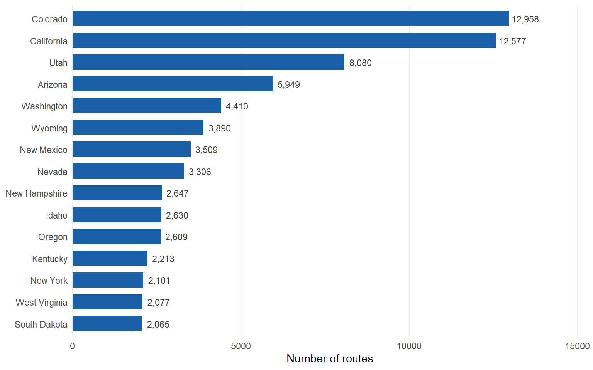
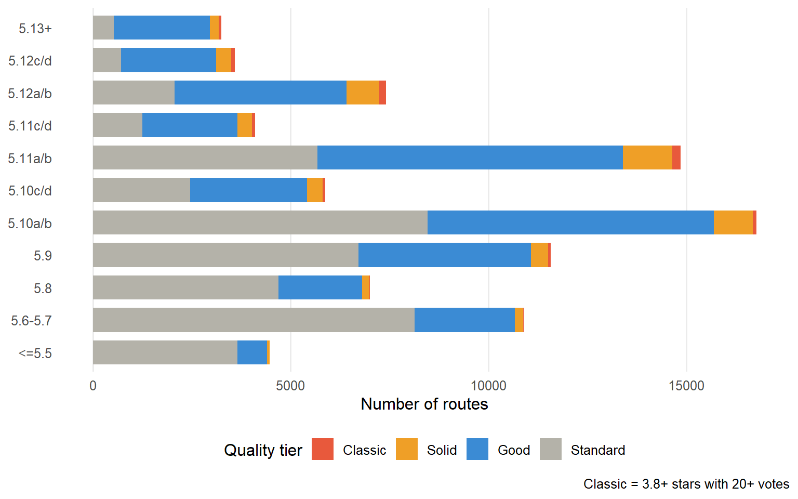
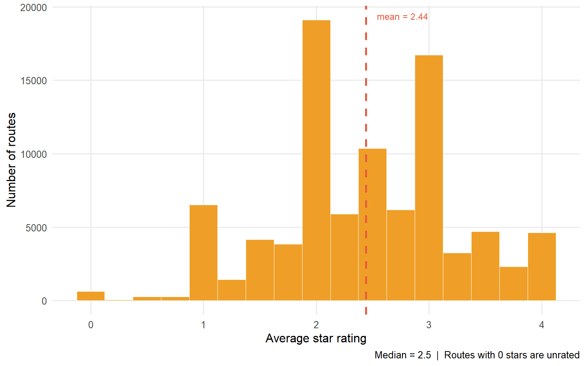

US Routes
90,408
Climbing Walls
13,446
States
47
Classic Routes
876
Avg Star Rating
2.4
This dashboard explores nearly 90,000 climbing routes across the United States sourced from Mountain Project , the largest crowd-sourced climbing database in North America.
The goal is to help climbers answer: Where should I climb? What routes match my ability? What are the best climbs near me?
What the data contains:
- Route name, grade (YDS), and type (sport, trad, boulder, alpine)
- Average star rating and number of votes from the community
- GPS coordinates, pitch count, and route length
- Location hierarchy: wall > sub-area > region > state
What this dashboard shows:
- About the Data — dataset overview and geographic distribution
- Analysis — grade distributions and quality patterns
- Recommendations — personalized route suggestions using the sidebar filters
- Summary — key findings and further resources
Use the sidebar filters to narrow routes by experience level, state, climbing style, and star rating. Filters apply on the Recommendations page.




Routes are ranked using a composite score (0–10) that combines four signals:
- Bayesian quality (45%) — a star rating adjusted for vote count. Routes with few votes are pulled toward the global average so a single 4-star vote doesn't outrank a 3.9-star route with 500 votes.
- Grade match (30%) — a score that peaks at your experience level and falls off smoothly for routes that are too easy or too hard.
- Classic bonus (15%) — extra credit for routes with 3.8+ stars and at least 20 community votes.
- Pitch bonus (10%) — a small boost for multi-pitch routes, reflecting their greater commitment and adventure.
This dashboard set out to answer a simple question that every climber faces: where should I climb, and what routes are right for me? After exploring nearly 90,000 routes across the United States, a few clear patterns emerged.
The data is heavily skewed toward the West. Colorado, California, and Utah together account for over a third of all routes in the dataset. This reflects both the concentration of quality climbing terrain and the demographics of Mountain Project’s user base, which trends toward western sport and trad climbers.
Moderate grades dominate. The 5.9–5.10 range has by far the most routes, with Classic-tier quality concentrated in the 5.10–5.11 window. This suggests that the sweet spot for finding high-quality climbing with lots of options is the intermediate grade range, which aligns with where most experienced recreational climbers operate.
Star ratings are unreliable without vote context. Many routes have high average stars but only one or two votes — these are not the same as a 4-star route with 500 votes. The Bayesian scoring approach used in the Recommendations page addresses this directly by pulling low-vote ratings toward the global mean of about 3.2 stars.
Sport climbing has the most routes; trad has the highest classic rate. Despite sport climbing dominating in raw numbers, trad routes punch above their weight in the Classic tier — likely reflecting the longer history, greater commitment, and stronger community curation around trad climbing destinations.
The recommendation system meaningfully reorders results. Simple star-rating filters return routes that look good on paper but may be at the wrong grade, too far away, or obscure. The composite score — combining quality, grade fit, pitch count, and classic status — surfaces routes that are both high quality and appropriate for the user’s stated level.
- Mountain Project — the source dataset; route pages, area guides, and conditions reports
- The Crag — alternative global climbing database with similar data
- OpenBeta — open-source climbing database with a public API
- Bayesian average ratings — the theory behind the IMDb-style weighted score used in this project
- Leaflet for R — documentation for the interactive maps used throughout
- Quarto dashboards — how this dashboard was built
dplyr+stringr— data wrangling and location parsingggplot2— grade pyramid, type breakdown, star distributionleaflet— interactive climbing wall mapDT— searchable route recommendation tableshiny— sidebar filters and reactive outputs
Full source code, data, and the companion Shiny app: github.com/mojo1019/STAT408Final